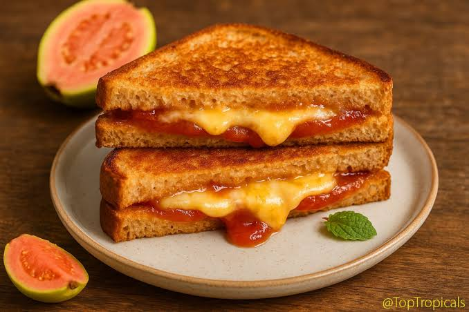

Grilled Cheese
Home

Description
Here is a Grown-Up Grilled Cheese that stays easy to make but introduces
exciting textures and flavors by using a crispy parmesan crust, a touch of
heat, and a sweet contras
Ingredients
- 2 slices artisanal sourdough bread
- 1/3 cup sharp Cheddar cheese (shredded)
- 1/3 cup Gruyère or Fontina cheese (shredded)
- 1 tbsp softened butter or mayonnaise
- 1 tbsp finely grated Parmesan cheese
- 1 tbsp hot honey (or regular honey mixed with a pinch of cayenne)
Steps
-
Place your sourdough slices flat; Layer the Cheddar, close the sandwich.
-
Spread a thin, even layer of butter or mayo on the outside of both bread
slices.
-
Place the sandwich in a skillet over medium-low heat. Cook for 4
minutes.
- Flip carefully. Cover the pan with a lid for the final 3 minutes.
- Serve and enjoy!